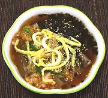

|
Acorn Jelly Soup with RiceKorea - Dotorimuk-bap | ||||
| Serves: Effort: Sched: DoAhead: |
4 soup *** 40 min Prep |
The recipe will provide "single bowl meals" for 2 people, or soup courses for 4. It offers interestingly contrasting flavors and textures. In Korea this soup is also served cold, in which case cucumber strips may replace the egg strips (or you can have both). | |||
|
8 5 12 ----- 3/4 1 1/4 ----- 1/4 1 a/r a/r ----- 1 1 1/2 ----- |
oz c oz --- c t t --- c --- T t --- |
Acorn Jelly (1) Stock (2) Rice, cooked -- Kimchee Seasoning Cabbage Kimchee (3) Sugar Toasted Sesame (4) -- Garnishes Nori (5) Chili, fresh (6) Egg Strips (7) Toasted Sesame (4) -- for Broth Scallion Soy Sauce (8) Salt ------------ |
This soup is assembled into individual servings, so is not good for buffet service. Prep - (30 min 50 min with Stock)
|